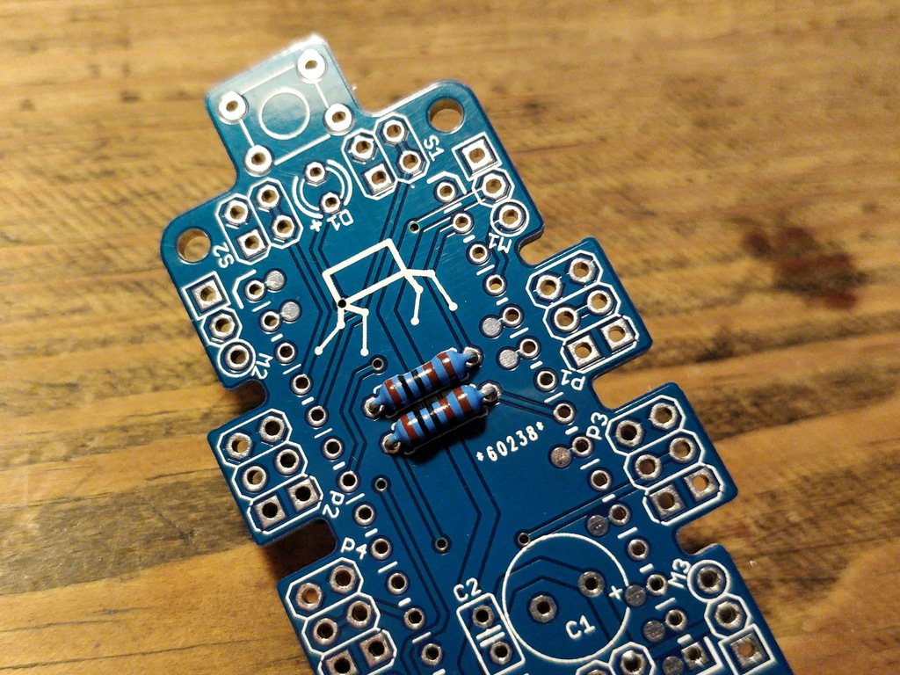
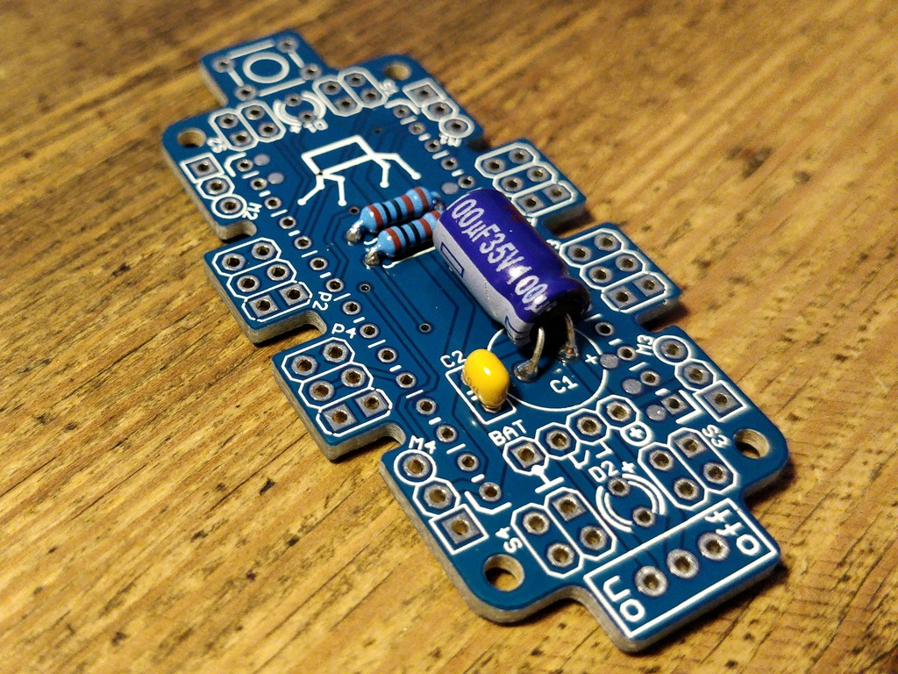
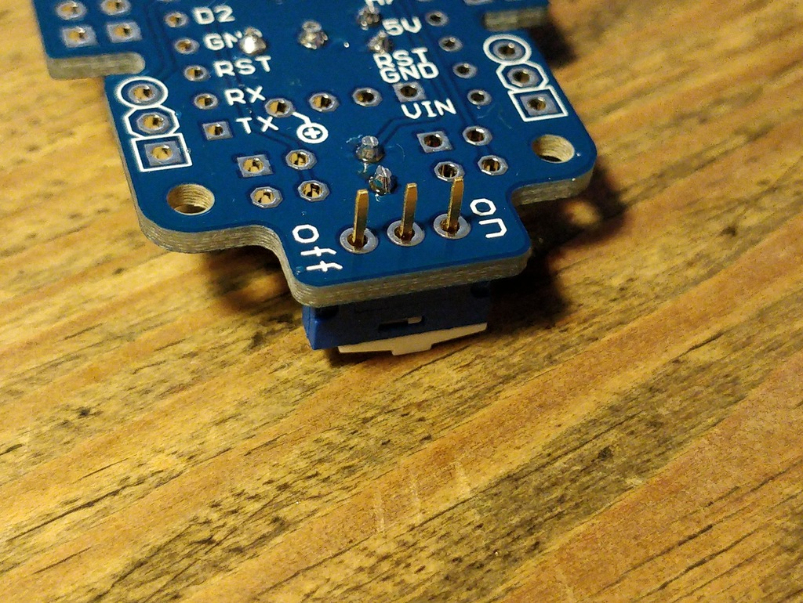
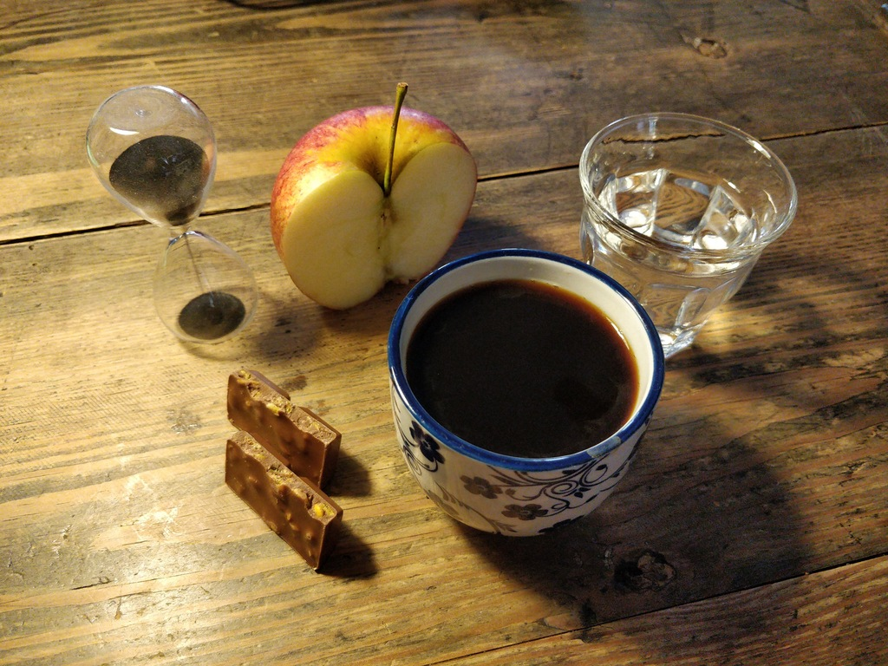
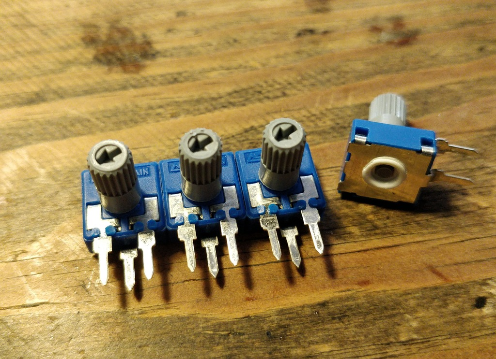
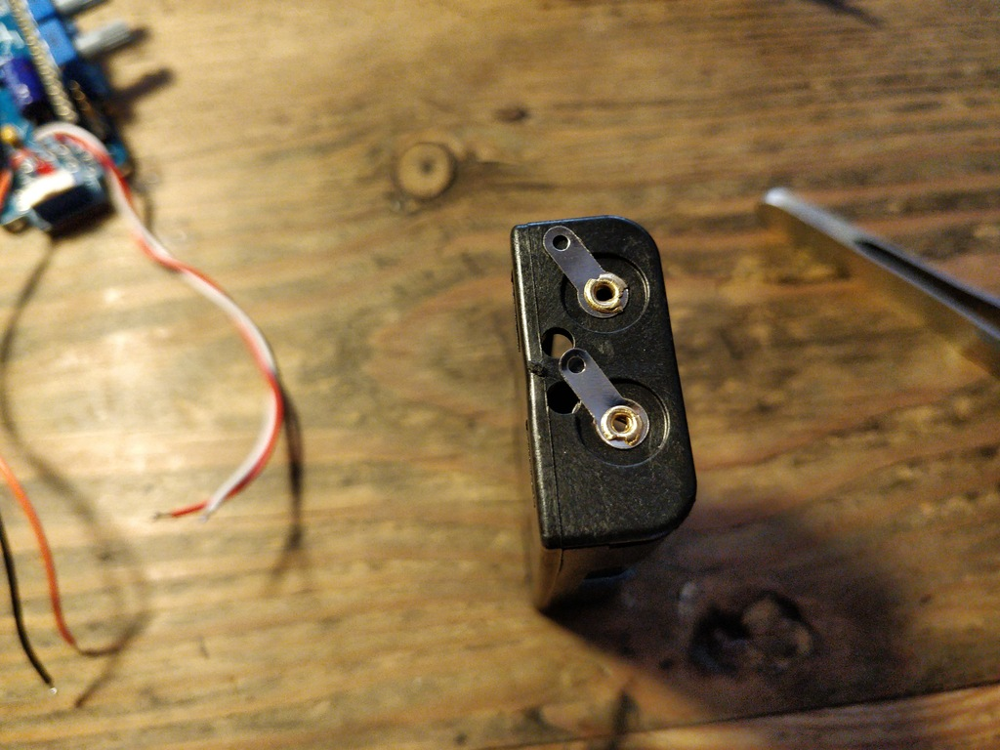

Bakiwi Assembly Documentation
This is the old Bakiwi’s assembly manual. If you bought your Bakiwi after June 2020 you are probably looking for the new manual. With the following steps you can assemble your Bakiwi walking robot from the kit. We encourage everyone to contribute to this project. Please share your ideas and experiences, upgrades and schematics, source code and tricks.
Motivation
Preparation
| Before starting the assembly. Check that you have all the tools and parts in place. We recommend reading this manual once briefly before starting the assembly. Please also have a look at the schematics of the board or the board’s layout. |
{kind=link}

Prepare Workbench and Tools
Recommended Tools
We recommend these tools to assemble the Bakiwi robot:
-
soldering iron with a very fine tip and solder (0.5mm) and up to 400°C (regulated) temperature
-
flat-nosed pliers
-
side-cutting pliers
-
wire stripper
-
utility knife
-
multimeter
-
sandpaper or files
-
small Phillips screw driver
-
tweezers (optionally)
-
hot glue or superglue (optionally)
-
a box of craft materials, trash or old Lego parts for creating legs and body parts of your robot.

Check the Parts
| Check the parts in your Bakiwi package for completeness and complain to me via email if it’s not complete :) |
Bakiwi Assembly Kit Parts
2 |
micro servos (incl. several horns) |
4 |
mini-potentiometers 10 kΩ |
4 |
mini-knob |
1 |
PCB SO(2)-Walker (referred to as the motherboard) |
1 |
Arduino-Nano compatible board (i.e. Nano-Board) |
2 |
battery holder (2xAA) |
2 |
1 kΩ resistor |
2 |
LED (two different colors) |
4 |
1x3 pin header |
2 |
1x15 socket |
1 |
100 µF electrolytic capacitor |
1 |
100 nF ceramic capacitor |
1 |
tactile button |
2 |
on/off slide switch |
4 |
10 cm cable |

| Batteries might not be included in the set. Ask your workshop leader or get you a set of 4x AA (mignon) batteries with 1.5 Volts each. |

Soldering
Prepare Soldering
| Watch your health! Use enough light. Make sure there is fresh air during soldering and not to breath-in the solder vapor. |
| Soldering irons get REALLY hot. You need to stay focused and should be careful not to burn yourself or others. When leaving the table or room, switch off the soldering station. |


Solder Nano-Board Header


Resistors




Capacitors



LEDs

| To remember which lead is plus or minus, imagine, there is a rule of thumb: The dashes of the plus sign put together in a line are longer than the minus dash. Easy, isn’t it? |

Switches


Socket


Get a break
| Now it’s time to grab a coffee or similar and relax your eyes. Get some fruit and fresh air, give your body a break :) |

Soldering (continue)
Servo Header

Potentiometers


Battery Pack




| Battery packs are made of temperature-sensitive plastic. Try to solder only as short as possible in order to avoid melting the plastic. This could irreversibly damage the pack and lead to connection problems later. |

Soldering finishing


| Do not dump the bags. Re-use them or return them to your workshop leader if you do not need them anymore. Save resources. There is no planet B, right? |

Testing and Flashing Firmware

Insert Batteries
Installing Arduino IDE
Checking out the Code-Repository
Compile Firmware
Connecting the Nano-Board to a PC

Selecting Board and Microcontroller

Uploading Firmware
Testing the Functions

Assembly